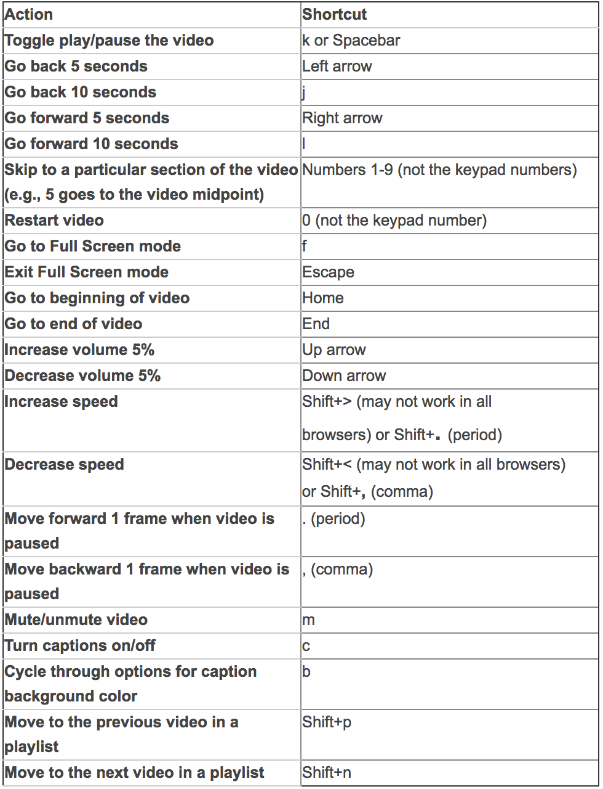
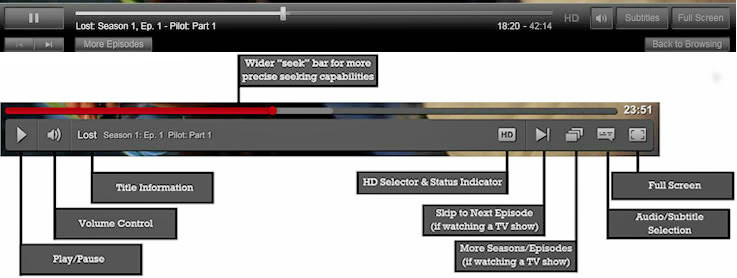

Typical Appearance
Simple three button interface towards the bottom of the screen, previous file, Play/Pause, and next file. Top of the screen includes the file name, and any other details about the file if available. The middle of the screen will show the video itself or the album art in case of audio files. Other buttons include volume control through buttons or a slider, options to shuffle your list of songs or repeat a single song or playlist, and a drop down menu for media settings. In the case of a video, choices for the quality of the video are usually present when streaming it online. Lastly slider that corresponds to the video or song length and how far into the file you are is present at the bottom of the screen.
Typical Behavior
Songs are listed by alphabetical order, and depending on what tab you are in you can search for specific artists or albums as well. When play button is clicked/pressed, the file will begin playing. Default speakers in the device will be used unless there are user designated speakers available (e.x. headphones plugged in, blue tooth stereo system set up, etc.). If the previous file button is pressed once, the player will return to the beginning of the current file. If it is pressed twice in rapid succession it will start playing the file that came before the current one. The next file button only needs to be pressed once to skip the rest of the current file and start playing the next file in the list.
Component in Action
Priority Metrics
For most users, media players are used to do one thing, to play the media that the user wants them to play. That being said, because it is more of a utilitarian component, there are some usability metrics that are not as importnat as others. Some of the important ones are learnability, efficiency, errors, and memorability.
Learnability: Media players have to be quickly learnable. For most users, the media player is only a gateway for them to see the actual content. The quicker it is to learn the software the better. Many media players should come intuitively. The different buttons and icons are very similar to other physical media players such as DVDs, Blu-Ray players and CD players. This similarity helps for users to quickly learn how to watch media on their devices.
Efficiency: Since it is not so much the media player that is important then the actual content being played, media players must also be very efficient. Many of the players today have many keyboard shortcuts. Arrows can be used to skip songs or to fastforward or rewind per frame. Spacebar is also commonly used to play and pause. Also there are many shortcuts for fullscreen or to adjust the volume.
Errors: Though errors are not fatal for media players, errors can annoy the user and take away from the content being shown. Errors such as play and pausing when the user wants to or wrong volume controls may not allow the user to play the video as intended. Since as said before, a media player is a gateway for the actual audio or video media. Therefore though the user may not be fatal, as long as the media does not get deleted, the errors for Media players should be very small.
Memorability: Media players should be very memorable. When a media player isn't used for a long time, the user should automatically be able to remember how it functions because for the user, their intent is to watch the audio/video content that the media player is going to play. The mental model of the media player as well as the user should not be very different. To help to make sure it is memorable, similar icons are used throughout media players for common tasks such as play, stop, or skip.
Satisfaction: Satisfaction is not a very important component for media players. As long as the media player is able to play the content that the user wants then it is doing its job. It is the job of the content itself to satisfy the users.
Key Chararacteristics what do all principles do all great media players have?
- Feedback: It is very important for the user to always get feed back for whatever action that they do. For example of the user presses play, the content should play. Also if the player pauses the video using the pause button, after clicking the content should also pause. If the content is still loading, a loading splash screen should also show up. This way the user will always know what state the media player is in.
- Universality and Consistency: Media and audio content should be accesible to everyone no matter where they are from. Universal signs for play, pause, skip and even volume are all very same and also derive from the physical machine buttons on DVD, Blu-ray, and CD players. Also many great media players will also have accsesiblity options such as closed captioning.
- Shortcuts: For easy access and for easy use, media players should also have shortcuts for the most basic of functions such as pausing and skipping.
- Transparency: When users use the media player, it is not the media player that they are intersted in, instead it is the content. Many great media players have hover and hover off states where when the user is no longer hovering or doing any action to the buttons the control panel for the media player disapeers.
Events
Hovering your mouse over the video or tapping the screen while the video is on will bring up the user interface. Clicking/pressing the Play/Pause button will trigger the file to start playing or pause at that time. If the previous file button is pressed once, the player will return to the beginning of the current file. If it is pressed twice in rapid succession it will start playing the file that came before the current one. The next file button only needs to be pressed once to skip the rest of the current file and start playing the next file in the list. Moving the slider for volume will increase or decrease the volume that the file is playing at.
State Diagram
In some media players there are two major states, when the control shown and control hidden states. In the control shown state this is when the user is able to control the video. Within this state there are multiple states:
- Idle/Paused: When the media is stopped
- Playback: When the media is playing
- (Optional) Rewinding: When the media is playing backwards
- (Optional) Fast Forwarding: When the media is playing ahead
For video media players there are also options to change states between having the video play full screen and the video playing at the specifed size.

Variants
Audio Media Settings
Video Media Settings
Platform Specifics
Mac OSX: Yosemite
Appearance

Above is a screen shot of what a media player looks like in OS X Yosemite.
Video Media Player
For Yosemite, after double-clicking on the icon, Quicktime Media player launches in a borderless window. The difference here is that there is no setting for quality. Instead it is all the same quality across the board.

Above is a screenshot of what previewing media looks like in OS X Yosemite.
This is a screenshot of what previewing media looks like in OSX Yosemite. If a file is selected, the user can hold down space bar and they can play it. Also they can press the play button on the lower right hand corner.
Behavior
Component in Action
Key Characteristics
In reference to the OSX Human Interface Guideline, Apple also references that Feedback and Assistance is important. Also keyboard alternatives are also very important. They encourage to "provide keyboard-only alternatives". Other important principles that are important are:
- Direct Manipulations: An onscreen object must remain visible while performing actions on to it. Thus even though the controls may disappear on the media player, the content itself does not disapeer.
- Feedback and Communication: There should be some reaction to every action that the user does towards the media player.
- Consistency: Consistent to other versions of software and consistent to user mental models for other media players.
iOS 8.1.2 iPhone4s
Appearance


Above are screenshots of what a media player looks like on the iPhone4s in the Photos app.


Above are screenshots of what a media player looks like on the iPhone4s in the Video app.
One of the major differences in appearance is that the timeline for iOS is located on the top of the screen separate from the buttons
Video Media Player
For iOS, different media players appear depending on which application you are currently in. The buttons though are very similar to the original.
Behavior
- For the iPhone instead of clicking, the user must tap in order to use the buttons. Also instead of hovering, the user must tap on the video in order for the controls to become hidden.
- Pinching gestures allow you to zoom in and out of video.
- Depending on the user's settings, rotating the device allows the video to also rotate from a smaller view to a larger view.
- Volume controls can be altered by either sliding the volume bar or pressing the volume buttons located on the side of the device.
Android S5
Music
Video
Youtube
Youtube's video player shows the play, next video, volume, close caption, settings, theather mode, and full screen button. When you hover over each icon it tells the user what each one stands for. So the play button plays and pauses the video, the next video button when hovered over shows the thumbnail of the next video and the title of the next video, the volume button opens the volume bar and can change the volume. The closed captions turns on the subtitles for the current video playing.
The setting button opens a menu that has a few option; autoplay, annotations, speed, subtitles/CC, and quality. If the autoplay has the red check it will keep playing the next video that youtube’s algorithm picks and think you will like because the user is watching the current video. If annotations are on then the user can see what the video creator is linking or if they have anything linked on the side. The speed is how fast the video is playing, they have speeds going from .25 to 2 incrementing by .25 each time. The subtitles button lets you change the language of the subtitles. The theater mode button changes the player to be wider and buts black bars on the side of the player. Finally the fullscreen button makes the player fit the screen.

Here are a list of the hot keys:
Netflix
Netflix has a play, volume, HD, next episode, season/episode menu, subtitles, and full screen button. The play button just pauses and plays the button. A use can also do this by just clicking the video player. The volume control just opens up a volume bar and the user can scroll to what volume they want. The title information tells the user what show, episode number, episode name they are currently watching. The HD button changes the quality to HD or 720p or 1080p. The next episode button will allow the the user to move on to the next episode, The season/episode menu opens up a small menu that lets you see the different seasons and episodes of the show you are currently watching. It is convenient for shows you are rewatching and want to skip some episodes. Subtitles defaults to english and gives option to change the language. The fullscreen button makes the video player fit the whole screen.


Netflix shortcut:
References and Sources
Apple OSX Human Interaction Guidelines document https://developer.apple.com/library/mac/documentation/UserExperience/Conceptual/OSXHIGuidelines/DesignPrinciples.html#//apple_ref/doc/uid/20000957-CH18-SW1
Contact GitHub API Training Shop Blog About © 2017 GitHub, Inc. Terms Privacy Security Status Help